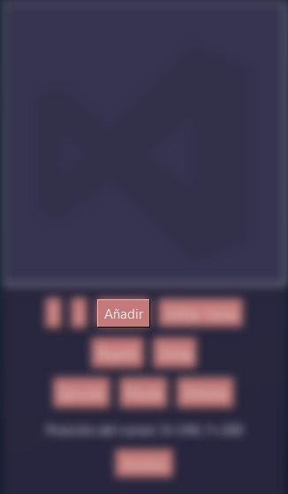
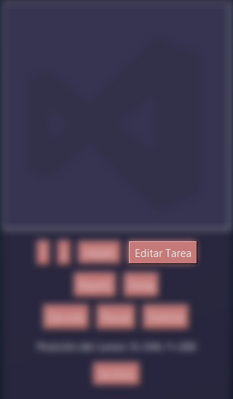
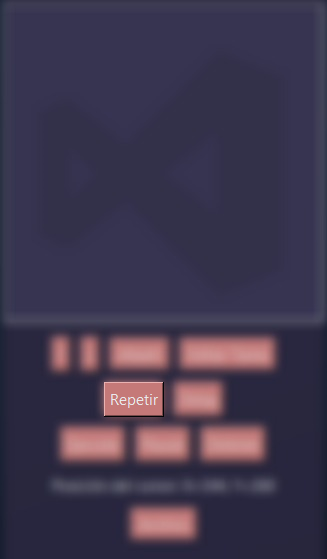
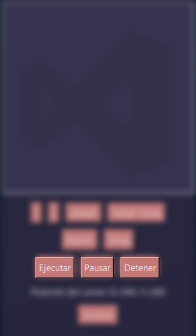

AutoTool
Pff, como si alguien leyera estas cosas...
Propósito de la Aplicación
AutoTool es una herramienta de automatización para tareas pensada principalmente para AutoCAD (puede ser empleada para otros propósitos). Permite a los usuarios crear, editar y ejecutar una serie de tareas automatizadas, ahorrando tiempo y esfuerzo en tareas repetitivas.
Instalación rápida
- Ejecutá el instalador
- Disfrutá del exe
Configuración (opcional)
Antes de instalar podés personalizar:
En el archivo colors.json puedes:
- Cambiar la paleta de colores
Estructura del proyecto
Archivos Python
- AutoTool.py: Archivo principal que inicia la aplicación.
- TaskApp.py: Contiene la clase principal de la interfaz gráfica y la lógica de la aplicación.
- AutoCADTask.py: Maneja la ejecución de las tareas automatizadas.
- CustomDialog.py: Define diálogos personalizados para la entrada de datos del usuario.
- TaskManager.py: Gestiona la creación, edición y eliminación de tareas.
- config.py: Contiene configuraciones y rutas de archivos.
Manual de Uso
1. Iniciar la Aplicación
Al ejecutar AutoTool.exe, se abrirá la ventana principal de la aplicación.
2. Mover Tareas
Puedes cambiar el orden de las tareas en la lista usando las flechas de subir y bajar. Selecciona una tarea y usa las flechas para moverla hacia arriba o hacia abajo en la lista.

3. Añadir Tareas
Para añadir una tarea, haz clic en el botón "Añadir" y selecciona el tipo de tarea que deseas agregar.

4. Editar Tareas
Para editar una tarea, selecciónala de la lista y usa el botón "Editar Tarea" para cambiar sus propiedades.

5. Repetir Tareas
Puedes configurar cuántas veces deseas que se repita la serie completa de tareas. Para ello, usa el botón "Repetir" y especifica el número de repeticiones.

6. Retraso entre Tareas
Puedes establecer un retraso entre la ejecución de cada tarea. Para ello, usa el campo "Delay" y especifica el tiempo en segundos.

7. Ejecutar Tareas
Para ejecutar las tareas, haz clic en el botón "Ejecutar". Puedes pausar o detener la ejecución en cualquier momento.

8. Guardar y Cargar Tareas
Puedes guardar tus tareas en un archivo para cargarlas más tarde. Usa los botones "Guardar Tareas" y "Cargar Tareas" en el menú "Archivo".

9. Exportar Script
Puedes exportar tus tareas a un script de Python para ejecutarlas fuera de la aplicación. Usa el botón "Exportar Script" en el menú "Archivo".
10. Ejecución nica
Si deseas que una tarea se ejecute solo una vez, asegúrate de no configurar ejecución única para esa tarea.
Paleta usada
Icono
Contacto
Created by TRC
✉️ t.aguinaga@alumno.um.edu.ar
Fieles Ayudantes:
- ClaudeIA
- GitHub Copilot
- ChatGpt
Equipo de testing:
- Josefina Porolli